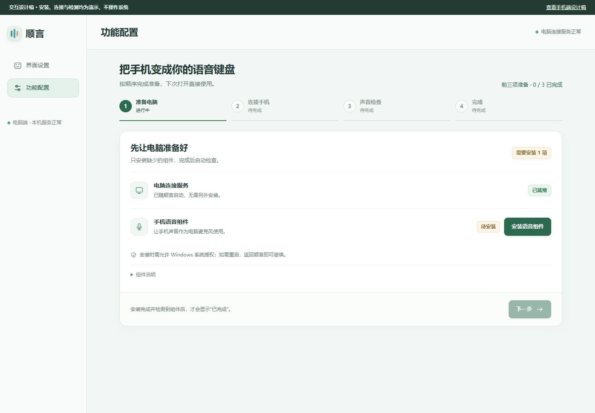
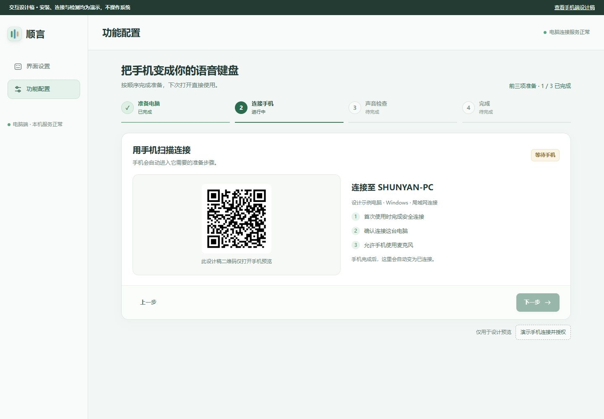
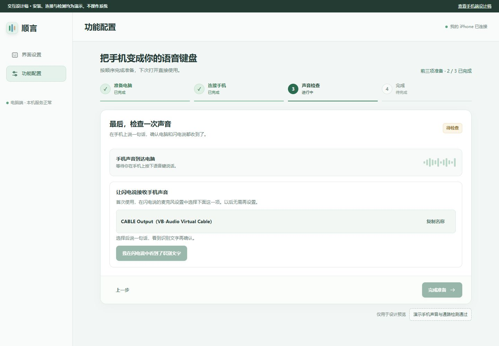
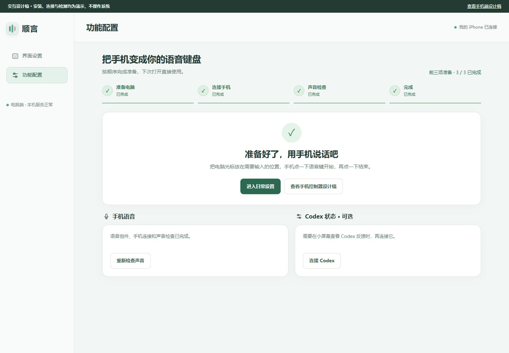
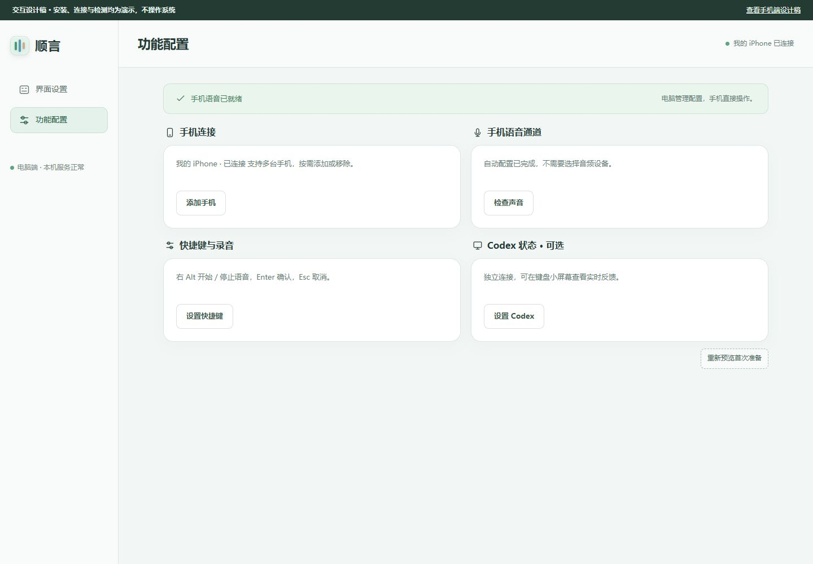
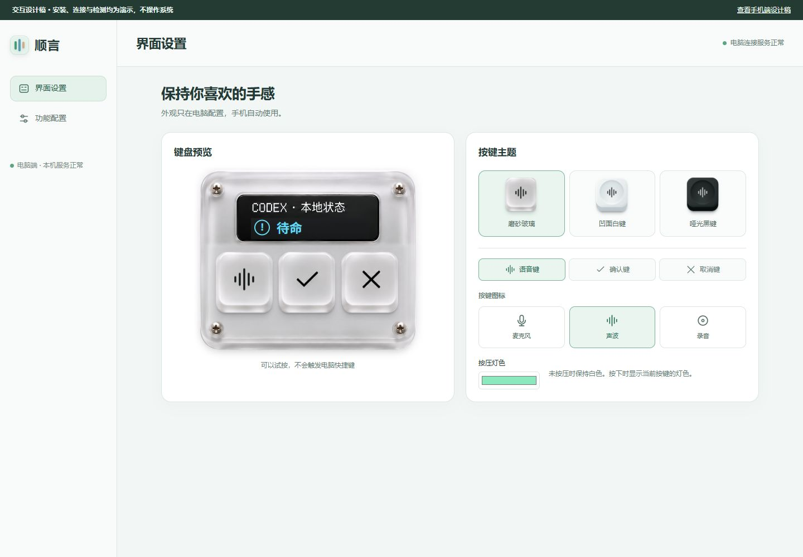
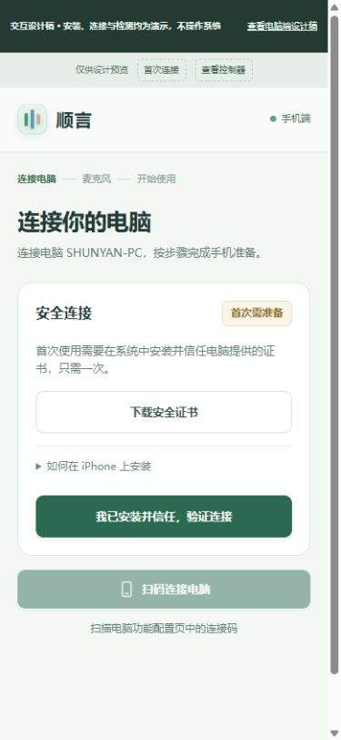
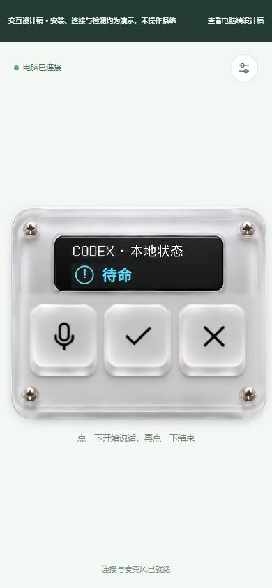

顺言 · 分端引导设计稿
电脑配置，手机操作。先完成准备，下次直接使用。本交互稿中的安装、授权、配对与声音检测均为演示。
电脑：按步骤完成准备

1 · 安装缺失组件，验证后标记完成
2 · 等待手机完成连接与授权
3 · 检查真实声音与目标软件识别
4 · 完成准备，进入日常使用电脑：两模块设置

功能配置 · 日常四卡
界面设置 · 可交互的键盘预览手机：只做手机需要的准备

首次连接 · 证书引导与配对
准备完成 · 三键控制器